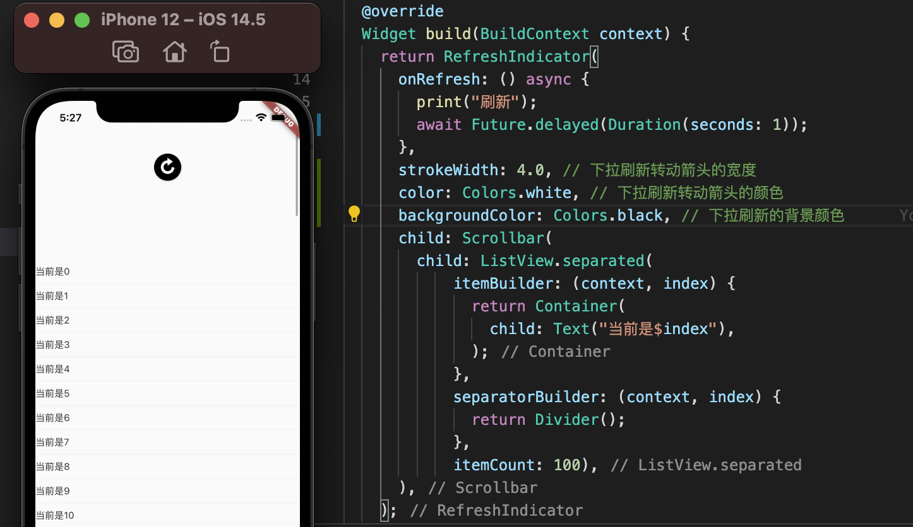

List View添加滚动条
-
设置默认滚动条
可以在ListView外层包一层Scrollbar，这样就会根据不同的系统展示不同样式的滚动条
-
设置苹果风格的滚动条
苹果风格的滚动条是Cupertino Scrollbar，这样安卓手机也能显示苹果风格的样式了，也就是滚动条也能拖动了。
注意： 设置了滚动条后拖动，如果List View没有设置itemCount就会crash崩溃。
-
滚动条一直显示
默认情况是滚动后滚动条会隐藏起来，如果想要滚动条一直显示可以设置is Always Shown，同时要传入controller和List View的controller是同一个，保证对应。这样两个都操作后才会一直显示。
下拉刷新
使用RefreshIndicator 组件就能实现下拉刷新，在onRefresh方法中设置网络请求。
Widget build(BuildContext context) {
return RefreshIndicator(
onRefresh: () async {
print("刷新");
await Future.delayed(Duration(seconds: 1));
},
strokeWidth: 4.0, // 下拉刷新转动箭头的宽度
color: Colors.white, // 下拉刷新转动箭头的颜色
backgroundColor: Colors.black, // 下拉刷新的背景颜色
child: Scrollbar(
child: ListView.separated(
itemBuilder: (context, index) {
return Container(
child: Text("当前是$index"),
);
},
separatorBuilder: (context, index) {
return Divider();
},
itemCount: 100),
),
);
}
}
下拉刷新功能和样式修改

事件通知
为什么List View滚动的时候Refresh Indicator和Scrollbar能够知道？
list View在滚动的时候会不断的发送通知，我们可以在List View外层添加NotificationListener 来捕获。
Widget build(BuildContext context) {
return RefreshIndicator(
onRefresh: () async {
print("刷新");
await Future.delayed(Duration(seconds: 1));
},
strokeWidth: 4.0, // 下拉刷新转动箭头的宽度
color: Colors.white, // 下拉刷新转动箭头的颜色
backgroundColor: Colors.black, // 下拉刷新的背景颜色
child: Scrollbar(
child: NotificationListener(
onNotification: (ScrollNotification notification) {
print(notification);
return true;
},
child: ListView.separated(
itemBuilder: (context, index) {
return Container(
child: Text("当前是$index"),
);
},
separatorBuilder: (context, index) {
return Divider();
},
itemCount: 100),
),
),
);
}

返回true的时候意味着捕获了，就不会继续往下传递了，也就是Scrollbar和RefrIndicator 不能获取道ListView发送的通知，对应的功能也就会失效。